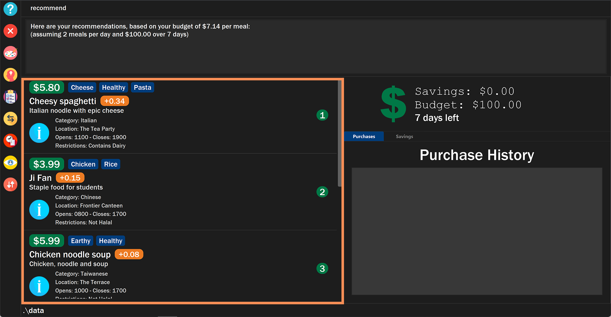
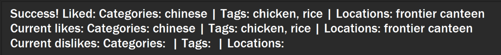
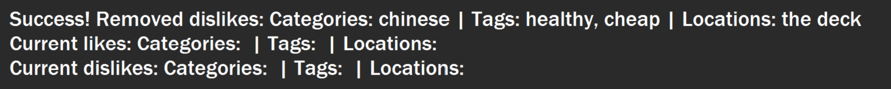
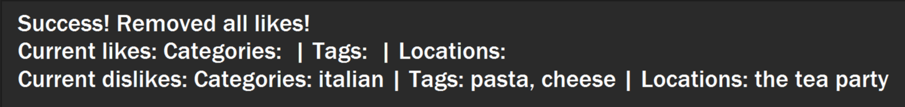
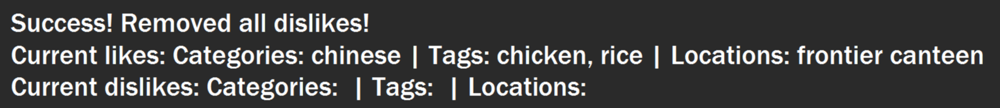

Overview
$aveNUS is a command line interface (CLI) financial planning application that my team and I designed for CS2103T (Software Engineering) module in School of Computing, National University of Singapore (NUS).
In this project, we morphed the sample address book application into $aveNUS, an application that allows NUS students to track their financial spending with regards to food purchases. Additionally, the application provides them with the best food recommendations within their current budget as well as a savings feature to track their savings.
The table below provides a quick summary of the symbols and formatting used in this portfolio.
|
Command that can be typed into the command box |
|
Success execution of command |
|
Tips that might be useful |
|
Additional information that is good to know |
|
Important pointers to take note |
Summary of contributions
This section provides a summary of the contributions that I have made to the team project.
Major enhancement: Recommendation Feature
I have added a recommendation feature to $aveNUS which displays food items that the user might prefer.
What it does
The recommendation feature displays a list of food items that the user might prefer, after taking into account various factors such as the user’s likes and dislikes, current budget and their purchase history.
For example, if the user has purchased Korean food on multiple occasions, the recommendation system will take note and start to recommend other Korean food that the user might enjoy.
In addition, if the user specifies that they do not like spicy food, the recommendation system will apply a penalty to spicy food accordingly and the overall recommendations would contain less spicy food.
Justification
NUS students might not want to eat the same food on multiple occasions. This feature allows money-conscious students to discover food matching their palate that they might not have tried before, while considering their budget.
Highlights
While implementing this feature, I had to implement new commands such as like, dislike, removelike and removedislike.
These commands form the backbone of the recommendation system as it allows the user to specify their preferences. The
application can then take into account the user’s specified preferences when selecting the food items to recommend,
resulting in more accurate recommendations.
Storage functionality for the user’s preferences were also implemented. This means that the user’s likes and dislikes are conveniently saved into their hard disk and persist even after the application is closed and restarted.
Furthermore, I had to link the Budget and PurchaseHistory class into my recommendation system, which was implemented
by other team members. It would be useful if the recommendation system takes into account the user’s budget and purchase
history. For example, the system filters out any item that is currently out of the user’s budget. Furthermore, it tries
not to recommend items that are recently purchased by the user, assuming that the user wants a variety of foods to enjoy.
In this way, the user benefits from the recommendation system which provides more relevant and accurate recommendations.
Other contributions
-
Project Management:
-
Documentation:
-
Updated the User Guide
-
Updated the Developer Guide
-
Standardized the structure among team members [PR #178]
-
-
Community:
-
Contributions to the User Guide
This section shows the contributions that I have made to the recommendation feature of the User Guide.
I wrote the commands for |
Recommendations
Getting a list of recommended food items: recommend
Users can get a list of recommendations from the application, based on these factors:
The factors affecting the calculation of the recommendation value is summarized in the tables below.
| Condition 1 | Condition 2 | Bonus |
|---|---|---|
Food tags match the user’s liked tags |
1 or more tags |
+0.05 and +0.03 per matching tag |
3 or more tags |
+0.10 and +0.03 per matching tag |
|
5 or more tags |
+0.25 and +0.03 per matching tag |
|
Food category matches the user’s liked categories |
N/A |
+0.15 |
Food location matches the user’s liked locations |
N/A |
+0.10 |
Food tags match the user’s tags in purchase history |
N/A |
+0.01 per matching tag |
Food category matches the user’s categories in purchase history |
N/A |
+0.02 |
Food location matches the user’s locations in purchase history |
N/A |
+0.03 |
Food purchase is found in user’s purchase history |
2 or more purchases |
+0.10 |
5 or more purchases |
+0.30 |
|
10 or more purchases |
+0.50 |
| Condition 1 | Condition 2 | Penalty |
|---|---|---|
Food price is out of the user’s current budget |
N/A |
Removes the item from the recommendation results |
Food tags match the user’s disliked tags |
1 or more tags |
-0.10 and -0.10 per matching tag |
2 or more tags |
-0.30 and -0.10 per matching tag |
|
3 or more tags |
-0.50 and -0.10 per matching tag |
|
Food category matches the user’s disliked categories |
N/A |
-0.40 |
Food location matches the user’s disliked locations |
N/A |
-0.30 |
Food purchase is found in user’s purchase history |
Within a time period of <2 days |
Applies a decreasing penalty from -10 which diminishes to 0 after 2 days |
|
The list of recommendations will be shown, sorted by their recommendation value.

|
To clear the recommendations, use the list or add or any sorting related command.
|
The recommended amount to spend per meal is calculated by budget / (daysToExpiry * 2) under the assumption that the
user takes 2 meals per day, provided the budget and daysToExpiry is set by the user.
|
If you do not see any recommendations, make sure that you have a non-zero budget set using
the budget command! See [Sets budget for a number of days: budget] for more information.
|
Listing likes and dislikes in the recommendation system: like or dislike
To list the user’s likes and dislikes, use the command without providing any arguments.
|
The list of liked or disliked categories, tags and locations will be shown. 
|
Adding likes and dislikes to the recommendation system: like or dislike
Users can specify their liked and disliked categories, tags and/or locations. The recommendation system will then be able to generate more accurate recommendations with the user’s preferences.
| Users can provide multiple categories, tags and/or locations with each command. However, at least one category, tag or location must be provided with each command. |
| Users cannot add what they have already liked into your current dislikes, and vice versa. The user’s likes and dislikes will be also saved into the hard disk for their convenience. |
To add likes:
|
You will see a success message and your liked categories, tags and locations would be added.

|
To add dislikes:
|
You will see a success message and your disliked categories, tags and locations would be added. 
|
Removing likes and dislikes from the recommendation system: removelike or removedislike
Users are able to remove their previously added likes and dislikes (if they exist) from the system.
| Users can provide multiple categories, tags and/or locations with each command. However, at least one category, tag or location to remove must be provided with each command. |
| The likes and dislikes must exist in the system before removing them. |
To remove likes:
|
You will see a success message and your liked categories, tags and locations would be removed. 
|
To remove dislikes:
|
You will see a success message and your disliked categories, tags and locations would be removed.

|
Clearing all likes and dislikes from the recommendation system: removelike or removedislike
To remove all likes or dislikes, use this command with the ALL flag.
This command is case-sensitive to prevent any accidental clearing of user’s likes or dislikes.
| Only use this command if you are sure that you want to clear your likes and dislikes! |
To remove all likes:
|
You will see a success message and your liked categories, tags and locations would be cleared.

|
To remove all dislikes:
|
You will see a success message and your disliked categories, tags and locations would be cleared.

|
Contributions to the Developer Guide
This section shows the additions that I have made to the recommendation feature of the Developer Guide.
I wrote the recommendation system section of the Developer Guide. The full Developer Guide can be found here. |
Recommendation feature
The recommendation feature allows users to generate a list of personalized recommendations using the recommend command.
The recommendations are tailored to each user based on the factors below:
Users are able to add their liked and disliked categories, tags and locations into the app using the like and dislike
command. The recommendation system will then take into account these preferences, in addition to their purchase history,
to generate a more accurate list of recommendations. Users will then able to find the food that they are likely to enjoy
more accurately.
Classes for recommendation feature in Model
With the addition of the recommendation feature, a new set of classes were implemented to support the feature.
A singleton class RecommendationSystem encapsulates the methods and classes related to this feature.
This RecommendationSystem class implements the interface Recommender which specifies the behaviour of the system,
and include the ability to generate recommendation values.
Additionally, the RecommendationSystem class also contains a class UserRecommendations, which include the likes and
dislikes of the user. The functionality of UserRecommendations is specified by the Recommendations interface,
encompassing the ability to add and remove likes and dislikes, among other features.
The UserRecommendations object contain 6 sets, namely:
The items stored in the sets are first converted to lowercase before adding them so that a case-insensitive comparison can be done more easily.
The class diagram below illustrates the relationship between the classes.

Adding likes and dislikes
The feature of adding the user’s liked and disliked categories, tags and locations was introduced to support the recommendation system.
The UserRecommendations class stores the list of user likes and dislikes as a set in lowercase to prevent duplicates.
Furthermore, the user’s likes and dislikes are integrated with Storage for the user’s convenience.
The sequence diagram below shows how a sample like command is executed:

The following activity diagram below summarizes how the like command works:
A similar execution sequence is performed for a dislike command by replacing instances of like with dislike and vice versa.
Displaying recommendations
After customizing the user’s likes and dislikes, users can obtain a personalized list of recommendations
using the recommend command.
The detailed tables documenting the calculation of the recommendation values can be found above at:
Getting a list of recommended food items: recommend
The activity diagram below shows how a sample Food is passed into RecommendationSystem to output a
recommendation value:

RecommendationSystem#calculateRecommendationThe calculated recommendation values are used to sort the food items when the recommend command
is executed. Food with similar recommendation values are sorted based on their price.
Design Considerations
Detailed below are the design considerations taken into account when engineering the Recommendation System.
Design Considerations of RecommendationSystem class
Explained below are our considerations when designing the RecommendationSystem class.
| Alternative 1 (Chosen Implementation) | Alternative 2 |
|---|---|
Implement
|
Implement
|
Design Considerations of RecommendationSystem#calculateRecommendation() function.
Explained below are our considerations when designing the RecommendationSystem#calculateRecommendation() function.
| Alternative 1 (Chosen Implementation) | Alternative 2 |
|---|---|
Declare a static method
|
Have a field (e.g.
|